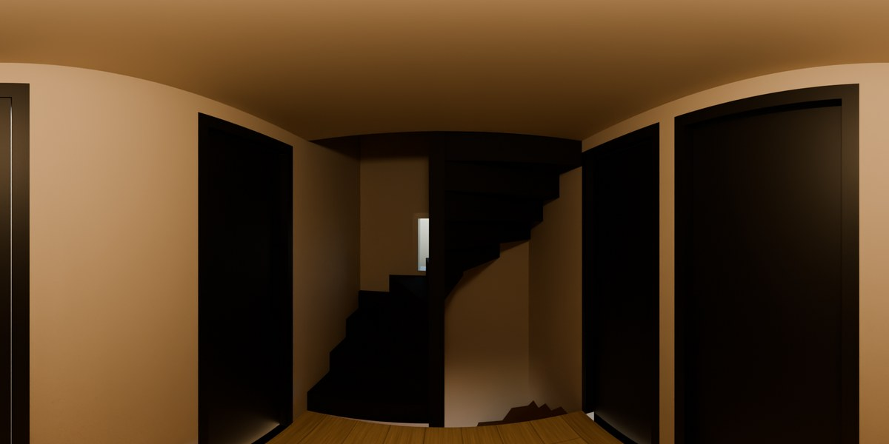
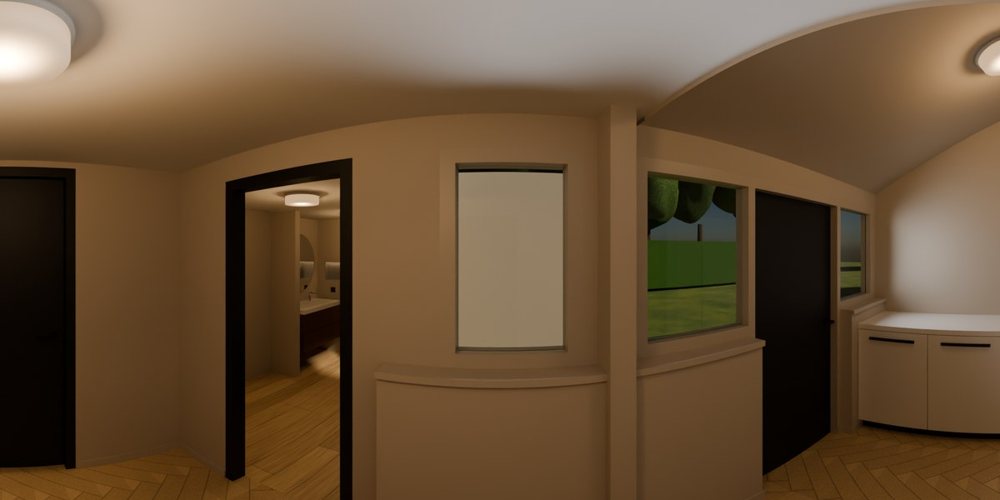
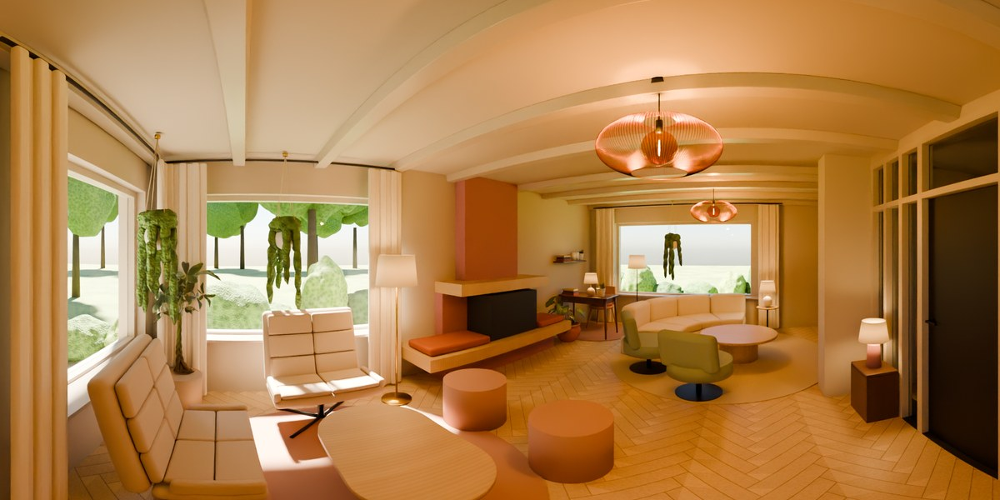

Woning Geulwijk
Rondkijken in de plannen voor het huis. Elke kaart is een 360-gradenpanorama vanaf een paar plekken in de kamer, gerenderd in Blender; sleep om rond te kijken.

Overloop
20 okt 2026
De overloop op de eerste verdieping met het trapgat: een zwarte dichte trap naar zolder die om een vierkante paal draait, zwarte deuren en Driftwood wanden en plafond.
Midden op de overloop

Bijkeuken
20 okt 2026
De bijkeuken met zwarte deuren en kozijnen, Driftwood wanden, visgraatvloer, wasmachine-nis en keukenblok; door de open keukendeur kijk je de keuken in.
Midden in de bijkeukenBij de keukendeurOverdagZonnig's Avonds

Ronde bank
11 okt 2026
Halfronde bank en twee draaifauteuils rond een grote ronde tafel, open naar de tv. Bij de ramen een zithoek met twee Emily's; bureau, planten en lampen volgens feng shui.
Vanaf de keukenOp de bankOverdag's Avonds